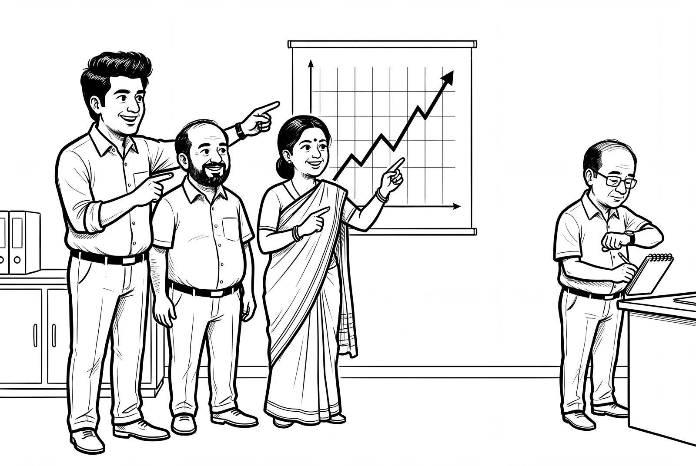

Faster, or Just Feeling Faster
Sixteen programmers sat down to work.
Each of them had spent about five years inside the code they were about to touch. They knew it the way you know your own kitchen in the dark. Every drawer. Every loose handle.
A coin decided how they would work. Some tasks came with permission to use AI. Some did not. There were 246 real tasks in all, pulled from their own backlogs, the ordinary bugs and repairs they would have done anyway that month.
They finished the AI tasks 19% slower.
Then someone asked them how it had gone. They said the AI had made them about 20% faster.
Sit with that for a second, because the whole of this piece lives in that gap.
What the study actually was
The trial was run by METR, a research nonprofit in the United States. It was published in July 2025 by Joel Becker, Nate Rush, Beth Barnes and David Rein. The developers were experienced. The code was large and old. The tools were the best available at the time, mostly Cursor Pro running Claude 3.5 and 3.7 Sonnet. Screens were recorded. The work paid 150 dollars an hour, so nobody was rushing to get home.
Before starting, the developers predicted AI would cut their working time by about a quarter.
It added 19% instead.
Here is the part that should trouble you more than the number. After finishing, after living through every one of those tasks, they still believed AI had sped them up by about 20%. They were not slightly off. They were wrong about the direction.
They did not lie. They were not careless. They felt fast. The stopwatch disagreed.

Why the feeling is so convincing
Nobody has proved why this happens, so treat what follows as my reasoning, not as a finding.
When you work without AI, you feel every minute of the hard part. You stare. You read the same line four times. The effort registers because the effort is yours. When you work with AI, the hard part arrives already done, and your job changes. Now you are reading, checking, correcting, running it again. That job feels lighter. Lighter is not the same as shorter.
So the tool takes away the sensation of difficulty without always taking away the time. Your body reports on sensation. It has never been able to report on time.
Twenty-five kilometres, every morning
I do a version of this five days a week, and I am not fooled at all.
My office is 25 kilometres from home. Driving takes an hour on a clear morning and up to two hours when the roads are bad. The metro takes about an hour, whatever the traffic outside is doing. Three interchanges, a packed compartment, and the last stretch home from the station to work, out at the other end.
So the metro is never slower than the car. On a bad evening it hands me back a whole hour.
I take the car anyway. Every day, knowing this, I choose comfort over the clock.
Notice what that is and what it is not. Nobody is deceiving me. I know roughly what each choice costs and I pay it with my eyes open. The developers in that study were somewhere else entirely. They were not trading time for comfort. They could not tell which one they had.
Both of these are happening with AI at the same time, and they need different answers. Some people cannot see the cost. Others can see it perfectly well and decide it is worth paying.
What this study is not
I would be doing the very thing I am criticising if I handed you one number and let you carry it about as a fact.
This was one trial, in one setting. Experienced developers, working in code they already knew well, using tools from the first half of 2025. Sixteen people is a small group. The developers reported their own timings. And the study’s own margin of error is wide: the true slowdown could be as small as 2% or as large as 39%. METR itself now marks the result as out of date, and says it may no longer describe how these tools work or how people use them today.
They tried to run it again. In August 2025 they started a second study, bigger, with 57 developers across 143 code repositories. It broke. How it broke is worth knowing.
Developers would not join. Not all of them, but enough to matter. They did not want to spend half their working hours without AI, even at 50 dollars an hour. Of those who did join, between 30 and 50 out of every 100 later admitted they had quietly held back their harder tasks, because being told to do those without AI would have hurt too much. One of them said that going back to the old way felt like walking across a city after getting used to a car.
I know that feeling. I feel it on the Delhi Metro platform at every interchange.
The raw numbers from that second attempt point to a speedup, not a slowdown. METR does not trust its own numbers, because the people most convinced of AI’s value had removed themselves from the study. The researchers now think developers really are faster in early 2026. They also say their data is far too weak to tell you by how much, and they are rebuilding the experiment from scratch.
That is what honest measurement looks like when it fails. It says so out loud.
There is one more figure worth putting beside all this. In early 2026, METR asked 349 people who work with these tools how much they thought AI had changed the value of their work. The middle answer was somewhere between 1.4 and 2 times. Nobody held a stopwatch. METR gives its own reasons to doubt even this. But look at the size of it. The people closest to these tools, describing their own gains, with every reason to be generous to themselves, said roughly double.
Double is a big number. It is not the number you hear at conferences.
The part I did not want to write
Some months ago, I was asked to provide my consent for the architectural and structural drawings for a housing project where I had bought a flat. My knowledge of structural engineering is close to zero. The builder had put more than eighty drawings online in view-only mode. They were large, detailed, and could not be saved or captured cleanly on screen.
I asked an AI tool for help. In under ten minutes I had every drawing on my own machine. I then asked Claude to read through them. It came back with a list of points that did not fit together. I took that list to the builder. The drawings had been prepared by senior architects and structural engineers, and the response I got was one of genuine surprise.
I tell that story with some pride. That is exactly why I have to be careful with it.
What did it prove? Not that I was twenty times faster. Without the tool I would not have been slower. I would have signed the papers. That is the true shape of the gain, and it is not a multiplier at all. It is the difference between doing a thing and not doing it.
I have used these tools nearly every day for three years. I would have told you, with full confidence, that my output has multiplied many times over. I have said something close to that out loud, more than once.
I have never measured it.
Not once have I timed the same kind of task with the tool and without it. My belief rests on the same evidence those sixteen developers had, which is the feeling of the work being easier. That evidence has now been tested, and it pointed the wrong way.
So I am not going to give you a multiplier. I will give you a list instead. In the last several months I have written a book, built a website, worked out a print specification and drafted assessment papers, alone, unpaid, in the hours after work. Three years ago I would not have attempted any of it. Not slowly. Not at all.
Judge that however you like. It is the honest version, and it is a bigger claim than any number I could invent, because a number invites you to check the arithmetic and this invites nothing but the record.
What you can do about it on Tuesday
Pick one task you do again and again. Something with a clear start and finish, about forty minutes long.
Do it once with AI and write down the time. Do the next one without, and write that down too. Four rounds, turn by turn, across two weeks. Then look at what you wrote.
You may find a gain. If you do, it is real, it is yours, and it is worth far more than a statistic you borrowed from me. You may find nothing. You may find what those sixteen developers found. Either way you will hold an answer instead of a feeling, and every decision you make about this technology from here on will rest on firmer ground.
You may also find, as I have on the road every morning, that you knew the answer already and were choosing the other thing on purpose. That is allowed. It is a different situation entirely, and you can only be in it once you have the number.
Much of the AI conversation in this country runs on conviction alone. On what people sense, on what they have been told, on how sure the last speaker sounded. It is a conversation with no instruments in it, and a conversation with no instruments will believe almost anything, especially the flattering thing, especially the thing that arrives quickly and fluently and in the calm voice of a machine that has never once been unsure of itself.
Get a stopwatch. Be the person in the room with a number.
September 1, 2026 | dasgupta.basab@gmail.com
Sources: METR, “Measuring the Impact of Early-2025 AI on Experienced Open-Source Developer Productivity” (July 2025); METR, “We are Changing our Developer Productivity Experiment Design” (February 2026); METR, “Measuring the Self-Reported Impact of Early-2026 AI on Technical Worker Productivity” (May 2026).